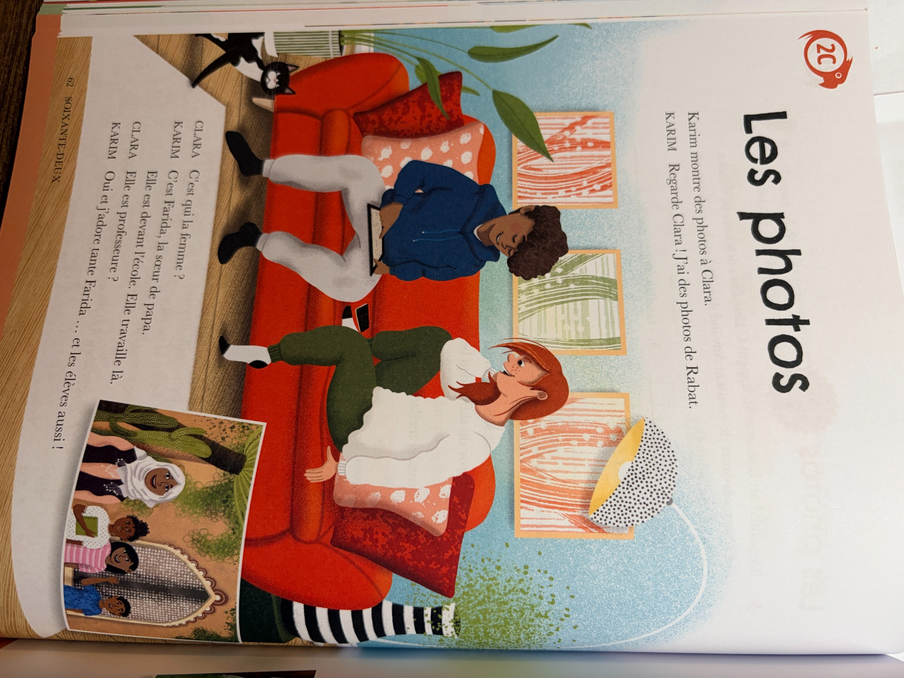

教材原文分为 2A、2B、2C 三个子项目；每页课文图片下方是法语、瑞典语、中文逐句对照。
📖 教材原文
2A · Jeu de memory
 第 42 页 · 放大
第 42 页 · 放大 第 43 页 · 放大
第 43 页 · 放大 第 44 页 · 放大
第 44 页 · 放大第 44 页 · 法语 / 瑞典语 / 中文
Karim joue au memory avec Dalila.
Karim spelar memory med Dalila.
卡里姆和达莉拉一起玩记忆游戏。
KARIM : À toi, Dalila.
KARIM: Din tur, Dalila.
卡里姆：轮到你了，达莉拉。
DALILA : D’accord… Une chaise… et… Non, un livre… À toi maintenant.
DALILA: Okej… En stol… och… Nej, en bok… Nu är det din tur.
达莉拉：好的……一把椅子……还有……不，是一本书……现在轮到你了。
KARIM : Alors… Qu’est-ce que c’est ? C’est une voiture et… un train. Oh non !
KARIM: Då så… Vad är det? Det är en bil och… ett tåg. Å nej!
卡里姆：那么……这是什么？这是一辆汽车和……一列火车。噢，不！
DALILA : Dommage pour toi ! À moi… Un garçon et… une maison. C’est pas vrai !
DALILA: Tråkigt för dig! Min tur… En pojke och… ett hus. Det är inte sant!
达莉拉：真可惜！轮到我了……一个男孩和……一栋房子。不会吧！
KARIM : Voyons… Une maison… et… une fille… Oh là là !
KARIM: Nu får vi se… Ett hus… och… en flicka… Oj oj!
卡里姆：让我看看……一栋房子……还有……一个女孩……哎呀！
DALILA : Hm… Un chat… et… un chat. Youpi ! À toi, Karim !
DALILA: Hm… En katt… och… en katt. Jippi! Din tur, Karim!
达莉拉：嗯……一只猫……还有……一只猫。太好了！轮到你了，卡里姆！
KARIM : Non, c’est encore à toi.
KARIM: Nej, det är din tur igen.
卡里姆：不，还是轮到你。
DALILA : Pourquoi ? Oh oui, pardon. C’est vrai ! Un vélo… et… un vélo ! Super ! Je gagne !
DALILA: Varför? Åh ja, förlåt. Det är sant! En cykel… och… en cykel! Toppen! Jag vinner!
达莉拉：为什么？噢，对，抱歉。没错！一辆自行车……还有……一辆自行车！太棒了！我赢了！
KARIM : Eh oui… tu gagnes toujours, Dalila. Tu es formidable !
KARIM: Ja… du vinner alltid, Dalila. Du är fantastisk!
卡里姆：是啊……达莉拉，你总是赢。你真厉害！
 第 45 页 · 放大
第 45 页 · 放大第 45 页 · 法语 / 瑞典语 / 中文
Dalila regarde un tableau dans un livre.
Dalila tittar på en tavla i en bok.
达莉拉正在看书里的一幅画。
DALILA : Regarde, Karim !
DALILA: Titta, Karim!
达莉拉：看，卡里姆！
KARIM : Oh, c’est nul !
KARIM: Åh, den är värdelös!
卡里姆：噢，这画真差劲！
DALILA : Mais non ! C’est un tableau de Picasso ! C’est super !
DALILA: Inte alls! Det är en tavla av Picasso! Den är toppen!
达莉拉：才不是呢！这是毕加索的画！太棒了！
KARIM : Mais qu’est-ce que c’est ?
KARIM: Men vad är det?
卡里姆：可这画的是什么？
DALILA : C’est une fille.
DALILA: Det är en flicka.
达莉拉：这是一个女孩。
KARIM : Une fille ? Ah bon…
KARIM: En flicka? Jaså…
卡里姆：一个女孩？是吗……
 第 46 页 · 放大
第 46 页 · 放大 第 47 页 · 放大
第 47 页 · 放大 第 48 页 · 放大
第 48 页 · 放大 第 51 页 · 放大
第 51 页 · 放大2B · La brocante
 第 52 页 · 放大
第 52 页 · 放大第 52 页 · 法语 / 瑞典语 / 中文
CLARA : Regarde, Karim, il y a une voiture, une Citroën…
CLARA: Titta, Karim, det finns en bil, en Citroën…
克拉拉：看，卡里姆，有一辆汽车，一辆雪铁龙……
KARIM : La voiture coûte combien ?
KARIM: Hur mycket kostar bilen?
卡里姆：这辆汽车多少钱？
CLARA : Oups… treize euros… c’est beaucoup. Oh, le petit chien…
CLARA: Hoppsan… tretton euro… det är mycket. Åh, den lilla hunden…
克拉拉：哎呀……十三欧元……太贵了。噢，那只小狗……
KARIM : Oui, très mignon ! Et regarde l’avion… Air France… super !
KARIM: Ja, väldigt söt! Och titta på flygplanet… Air France… toppen!
卡里姆：是啊，真可爱！再看那架飞机……法国航空……太棒了！
CLARA : Oui mais seize euros, c’est cher… mais la moto ! Formidable. C’est comme la moto de maman !
CLARA: Ja, men sexton euro är dyrt… men motorcykeln! Fantastisk. Den är som mammas motorcykel!
克拉拉：是啊，可十六欧元太贵了……不过那辆摩托车！真棒。它和妈妈的摩托车一样！
KARIM : Elle a une moto, ta maman ?
KARIM: Har din mamma en motorcykel?
卡里姆：你妈妈有摩托车？
CLARA : Oui… pourquoi ?
CLARA: Ja… varför?
克拉拉：有啊……怎么了？
 第 53 页 · 放大
第 53 页 · 放大第 53 页 · 法语 / 瑞典语 / 中文
LE MONSIEUR : Regarde, ma chérie. Un verre… et une table antique !
MANNEN: Titta, älskling. Ett glas… och ett antikt bord!
先生：看，亲爱的。一个玻璃杯……还有一张古董桌子！
LA DAME : Oui, mais le prix, Gustave !
KVINNAN: Ja, men priset, Gustave!
女士：是啊，可是价格呢，古斯塔夫！
LE MONSIEUR : Oui, c’est vrai… Mais la lampe là-bas est moderne.
MANNEN: Ja, det är sant… Men lampan där borta är modern.
先生：嗯，说得对……不过那边那盏灯很现代。
LA DAME : Oh, Gustave, regarde le tableau ! C’est peut-être un van Gogh !
KVINNAN: Åh, Gustave, titta på tavlan! Det är kanske en van Gogh!
女士：噢，古斯塔夫，看那幅画！也许是梵高的画！
LE MONSIEUR : Pour dix-huit euros ? Tu rigoles, Mathilde ! Mais, voilà le vélo parfait pour toi !
MANNEN: För arton euro? Du skojar, Mathilde! Men där är den perfekta cykeln för dig!
先生：才十八欧元？你开玩笑吧，玛蒂尔德！不过，那儿有一辆非常适合你的自行车！
LA DAME : Oui, mais… j’ai déjà un vélo. Dommage !
KVINNAN: Ja, men… jag har redan en cykel. Synd!
女士：是啊，可是……我已经有一辆自行车了。真可惜！
 第 54 页 · 放大
第 54 页 · 放大 第 56 页 · 放大
第 56 页 · 放大 第 58 页 · 放大
第 58 页 · 放大 第 59 页 · 放大
第 59 页 · 放大2C · Les photos
 第 61 页 · 放大
第 61 页 · 放大
第 62 页 · 放大第 62 页 · 法语 / 瑞典语 / 中文
Karim montre des photos à Clara.
Karim visar foton för Clara.
卡里姆给克拉拉看照片。
KARIM : Regarde Clara ! J’ai des photos de Rabat.
KARIM: Titta, Clara! Jag har foton från Rabat.
卡里姆：看，克拉拉！我有一些拉巴特的照片。
CLARA : C’est qui la femme ?
CLARA: Vem är kvinnan?
克拉拉：那个女人是谁？
KARIM : C’est Farida, la sœur de papa. Elle est devant l’école. Elle travaille là.
KARIM: Det är Farida, pappas syster. Hon är framför skolan. Hon arbetar där.
卡里姆：那是法里达，爸爸的姐姐或妹妹。她在学校前面。她在那里工作。
CLARA : Elle est professeure ?
CLARA: Är hon lärare?
克拉拉：她是老师吗？
KARIM : Oui et j’adore tante Farida… et les élèves aussi !
KARIM: Ja, och jag älskar faster Farida… och eleverna också!
卡里姆：是的，我很喜欢法里达姑姑……学生们也很喜欢她！
 第 63 页 · 放大
第 63 页 · 放大第 63 页 · 法语 / 瑞典语 / 中文
KARIM : Et voilà oncle Tareq, le frère de papa.
KARIM: Och här är farbror Tareq, pappas bror.
卡里姆：这位是塔雷克叔叔，爸爸的兄弟。
CLARA : Il est cuisinier ?
CLARA: Är han kock?
克拉拉：他是厨师吗？
KARIM : Oui. Il fait des plats super. Surtout le tajine.
KARIM: Ja. Han lagar fantastiska maträtter. Framför allt tajine.
卡里姆：是的。他做的菜特别好吃，尤其是塔吉锅菜。
CLARA : Le tajine ?
CLARA: Tajine?
克拉拉：塔吉锅菜？
KARIM : Oui. C’est un plat typique du Maroc. Très, très bon !
KARIM: Ja. Det är en typisk maträtt från Marocko. Väldigt, väldigt god!
卡里姆：对。这是一道典型的摩洛哥菜，非常非常好吃！
KARIM : Tu montres aussi des photos, Clara ?
KARIM: Visar du också foton, Clara?
卡里姆：克拉拉，你也给我看看照片吗？
KARIM : Ah… Formidable ! C’est ta maman sur la moto ?
KARIM: Åh… Fantastiskt! Är det din mamma på motorcykeln?
卡里姆：啊……太棒了！骑摩托车的是你妈妈吗？
CLARA : Oui. Et voilà mon oncle.
CLARA: Ja. Och här är min morbror eller farbror.
克拉拉：是的。还有，这是我的叔叔或舅舅。
KARIM : Il est policier ?
KARIM: Är han polis?
卡里姆：他是警察吗？
CLARA : Oui…
CLARA: Ja…
克拉拉：是的……
KARIM : Et les fleurs… ?
KARIM: Och blommorna…?
卡里姆：那这些花呢……？
CLARA : C’est parce que c’est mon anniversaire, le cinq mars.
CLARA: Det är för att det är min födelsedag, den femte mars.
克拉拉：因为三月五日是我的生日。
CLARA : Voilà Alice et Emma, les enfants de ma cousine Floriane.
CLARA: Här är Alice och Emma, barnen till min kusin Floriane.
克拉拉：这是爱丽丝和艾玛，我的表亲弗洛里安娜的孩子。
KARIM : Elle habite où, Floriane ?
KARIM: Var bor Floriane?
卡里姆：弗洛里安娜住在哪里？
CLARA : À Lyon.
CLARA: I Lyon.
克拉拉：在里昂。
KARIM : Et ton cousin Gabriel. Il habite à Lyon aussi ?
KARIM: Och din kusin Gabriel. Bor han också i Lyon?
卡里姆：那你的表亲加布里埃尔呢？他也住在里昂吗？
CLARA : Non. Il habite à Marseille.
CLARA: Nej. Han bor i Marseille.
克拉拉：不，他住在马赛。
Voici ma maman, mon cousin, mon oncle, ma tante, mon grand-père, ma grand-mère. Elle a 17 ans.
Här är min mamma, min kusin, min morbror/farbror, min moster/faster, min morfar/farfar och min mormor/farmor. Hon är 17 år.
这是我的妈妈、表亲、叔叔或舅舅、姑姑或姨妈、爷爷或外公、奶奶或外婆。她十七岁。
 第 64 页 · 放大
第 64 页 · 放大 第 65 页 · 放大
第 65 页 · 放大 第 66 页 · 放大
第 66 页 · 放大 第 67 页 · 放大
第 67 页 · 放大 第 68 页 · 放大
第 68 页 · 放大 第 70 页 · 放大
第 70 页 · 放大 第 72 页 · 放大
第 72 页 · 放大


🎧 教材原版音频
点击播放；同名不同版本保留供核对。
2A · Jeu de memory
Cartes_de_memory.mp3
Coup_denvoi (1).mp3
Coup_denvoi.mp3
Coup_denvoi_C (1).mp3
Coup_denvoi_C.mp3
Jeu_de_memory_1.mp3
Jeu_de_memory_2.mp3
2B · La brocante
_la_brocante_1.mp3
_la_brocante_2.mp3
2C · Les photos
Chanson_Frre_Jacques (1).mp3
Chanson_Frre_Jacques.mp3
Coup_denvoi_C (1).mp3
Coup_denvoi_C.mp3
Les_photos (1).mp3
Les_photos.mp3
其他教材练习录音
Exercice_4C (1).mp3
Exercice_4C.mp3
Exercice_5 (1).mp3
Exercice_5 (2).mp3
Exercice_5 (3).mp3
Exercice_5.mp3
Exercice_7(1).mp3
Exercice_8 (1).mp3
Exercice_8.mp3
Exercice_9A.mp3
Exercice_9B (1).mp3
Exercice_9B (2).mp3
Exercice_9B.mp3
Prononcez (1).mp3
Prononcez (2).mp3
Prononcez(3).mp3